Lobo Churrasqueiras
Fundada em 1968 na cidade de Nova Venécia, no noroeste do estado do Espírito Santo, a Lobo iniciou suas atividades produzindo churrasqueiras, máquinas para serrarias e secadores de café.
Atual Sistemas
Nossa trajetória começou no ano 2000 na cidade de São Gabriel da Palha, interior do estado do Espírito Santo. Em 2006 iniciou-se a expansão da empresa pelo estado e quatro anos depois já estava presente em todo território capixaba.
Matriz Sistemas
Fundada no ano de 2002 e com sede em Colatina, Espirito Santo, a Matriz Sistemas é uma empresa especializada em soluções na area de gestão da informação voltadas para a industria do vestuário.